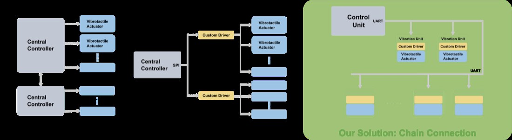
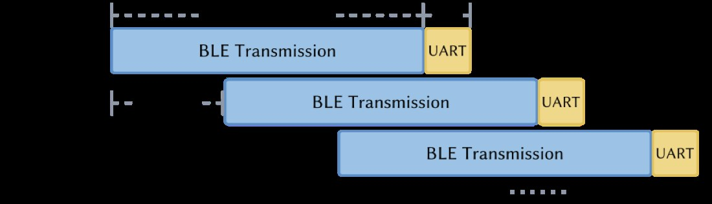
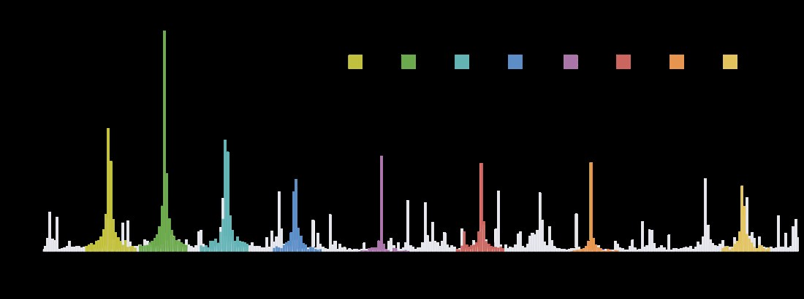
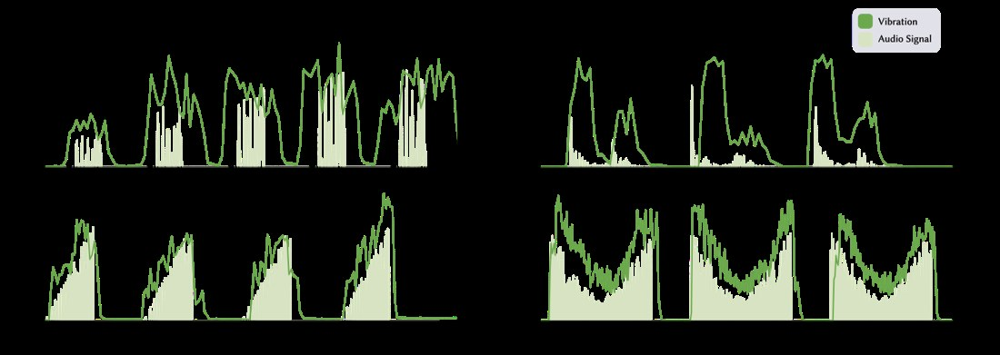
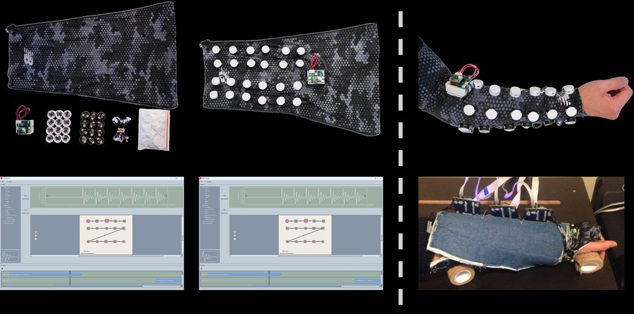
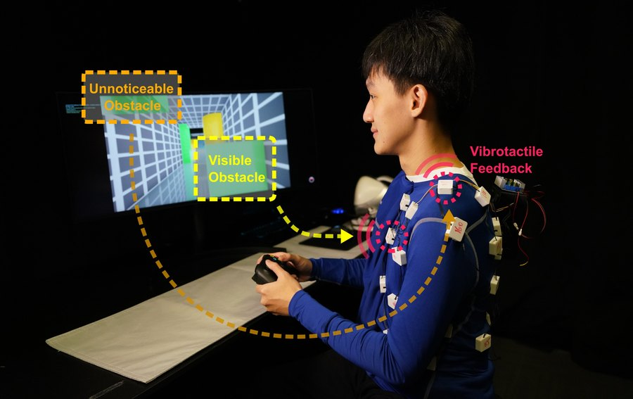
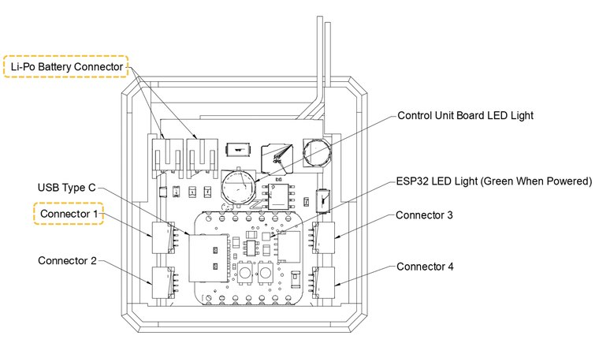
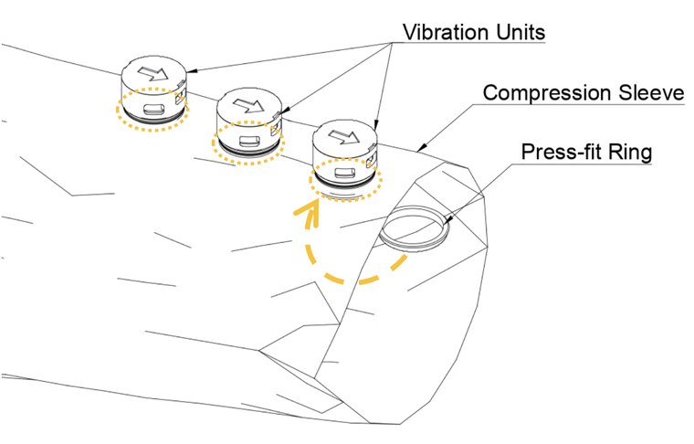
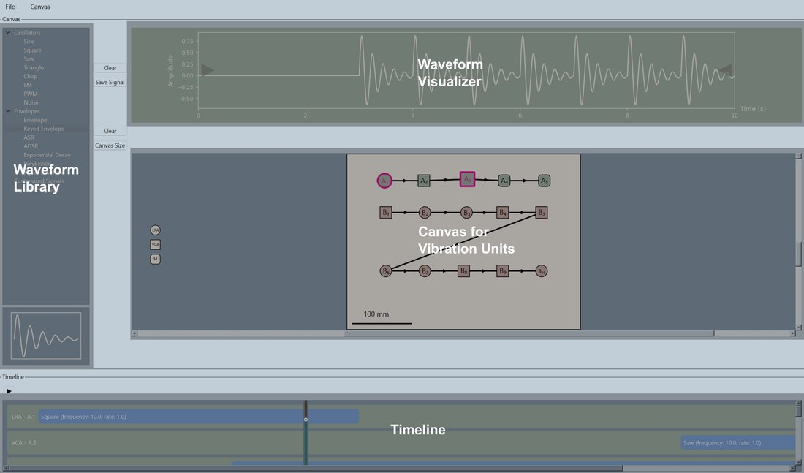

CHI 2025 ◆ Haptics ◆ DGP Lab, University of Toronto
A vibrotactile display is one motor. A vibrotactile system is dozens, on a body, in time — and that is where the toolkits give out, because every actuator you add wants another wire, another driver channel and another pin. VibraForge puts a microcontroller inside every actuator and daisy-chains them, so a chain is one cable and the system scales to 128 units on eight chains. Below you can author a spatiotemporal pattern the way the toolkit's editor does, play it on a sleeve, and find out whether the link can actually carry it.
A full suit in the dark: every green LED is one vibration unit with its own microcontroller, addressable independently over a single daisy chain per limb.
A spatial vibrotactile pattern is a picture: which unit, when, how hard. The grid below is one chain — sixteen units down, thirty-two time steps across — and painting on it is what the toolkit's GUI Editor does. What the editor also has to answer, and what the readout underneath tells you, is whether the pattern you just drew can be delivered: every change of state is one command, and the link measured in the paper carries one command every 5 ms.
Sixteen units down, time across. Drag to paint at the brush intensity; tap a painted cell again to erase it.
The frequency slider steps through the eight conditions the paper measured on an accelerometer, not arbitrary values — see the spectrum below.
The usual way to build a vibrotactile array is one driver channel per actuator, fanned out from a central board. It works beautifully at four actuators and becomes the whole project at forty: the wiring harness dominates the garment, the pin count dominates the board, and adding one more actuator means revisiting both.
VibraForge inverts it. Each actuator is sealed into a self-contained vibration unit with its own microcontroller, its own driver and an input and an output connector. Units daisy-chain: the control unit talks to the head of the chain, and each unit passes the stream along, acting on the messages addressed to it and forwarding the rest.
The consequences are all in the wiring. A chain of sixteen is one cable from the control unit, not sixteen. Adding a unit means plugging it into the end. The control unit carries eight connectors, so the system tops out at 8 × 16 = 128 independently addressed actuators — and the limit is the address space and the link budget, not the pin count.
The cost is that every actuator now contains a microcontroller, which is a real per-unit cost and a real per-unit failure mode. It is the right trade for a research toolkit, where the number of actuators is the variable you most want to change and the unit cost is the one you least mind.
The command path is split by what each layer is good at: BLE from the host for high-level patterns, because it is wireless and a wearable cannot be tethered, and UART down the chain for distribution, because it is deterministic and cheap. Measured end to end, that is 14 ms of BLE plus 2 ms of UART, with a new command admissible every 5 ms.
Those two numbers are the ones the editor above spends. Sixteen milliseconds is comfortably inside what feels simultaneous with a visual event; 200 commands a second sounds like a lot until you ask a pattern to change all sixteen units at once every 50 ms, which needs 320.




The eight frequencies are 123, 145, 170, 200, 235, 275, 322 and 384 Hz, and the spacing is the interesting part: each is about 1.18× the one below it. That is not an arbitrary ladder — it is geometric, eight roughly equal steps across 1.6 octaves, which is how a channel gets divided when the perception on the other end is closer to logarithmic than linear. Sixteen intensity levels sit on top of that, per unit, independently.
The evaluation is done on the right side of the transducer. It is easy to demonstrate that a driver commanded 235 Hz emits a 235 Hz signal; what matters is whether the mass on the end of it, pressed against a body, actually moves at 235 Hz — so the measurement is an accelerometer on the unit, and the answer is a clean peak in every condition.
The technical numbers make more sense read as a budget than as specifications. A vibrotactile pattern's information rate is (units that change) × (how often they change). The link gives you 200 changes per second to spend, total, across the chain. So:
Which is the useful design lesson, and the editor above makes it tangible: the patterns that feel best are usually not the ones that hammer the link. Continuity on skin comes from overlapping a few units, not from updating all of them quickly.

English phonemes mapped to spatiotemporal signatures on the forearm — a consistent pattern per phoneme, so speech can in principle be read through skin. It is the classic hard case for a tactile display, because it needs many distinguishable patterns in a small area, which is exactly what actuator count buys.
A lightweight garment for high-movement VR: impacts, directional hits and rhythm cues. The snap-fit units matter more here than anywhere else — the garment has to survive being moved in, and nothing is sewn.

AeroHaptix encodes distance-to-obstacle, direction and urgency as spatial vibration during drone teleoperation, so a pilot keeps situational awareness the camera cannot give them. It has its own page here, including a control playground and the flight data.
The real GUI Editor: draw on the body map, set intensity and frequency per unit per step, preview, and stream straight to the hardware over BLE.
A control unit and three vibration units on one chain. Green LEDs are per-unit status — the thing you want when a chain of sixteen has one bad connector in it.
The assembly is deliberately short, and the toolkit ships a manual for it. In outline:
Python_Test.py for a quick check (needs bleak), or the GUI editor at GUI_Editor/main_app/app.py.The one step worth pausing on is the second. A daisy chain with a direction is a footgun, and the mitigation here is a moulded arrow rather than a keyed connector — a reasonable call for a research kit built in small numbers, and the first thing I would change if it were going to be built in large ones.



VibraForge: A Scalable Prototyping Toolkit For Creating Spatialized Vibrotactile Feedback Systems — CHI 2025. Bingjian Huang, Siyi Ren, Yuewen Luo, Qilong Cheng, Hanfeng Cai, Yeqi Sang, Maurício Sousa, Paul H. Dietz and Daniel Wigdor, DGP Lab, University of Toronto. The toolkit, the hardware, the GUI editor and the three case studies are the authors' work; the project is led by Bingjian Huang and the code lives in their repository.
The pattern editor on this page was written afterwards to make the toolkit's central constraint — the command budget — something you can spend rather than read about. Its numbers (14 ms, 2 ms, 5 ms slots, the eight frequencies) are taken from the paper's technical evaluation; it does not talk to hardware.